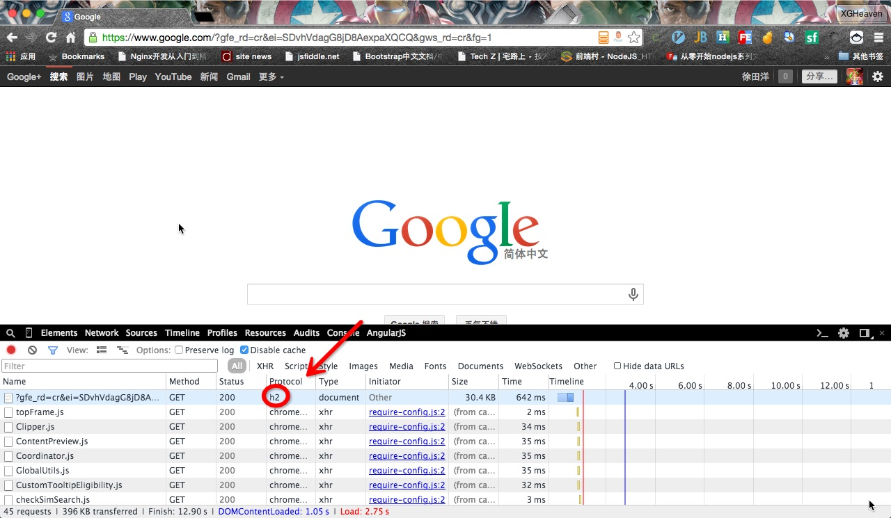
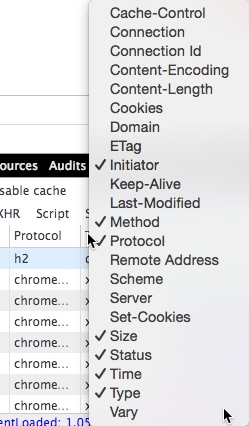
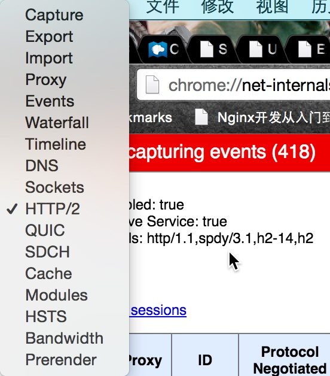
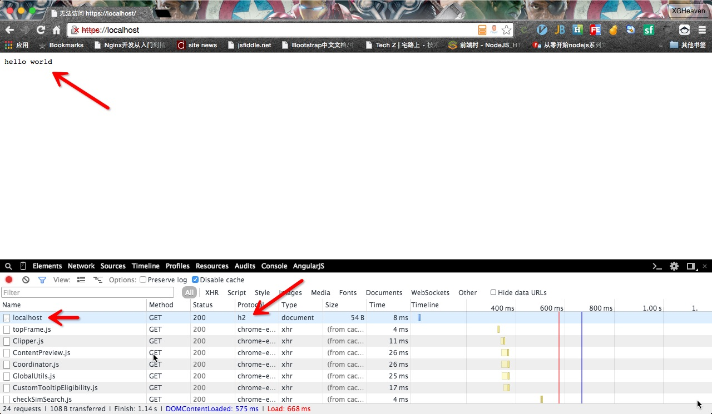
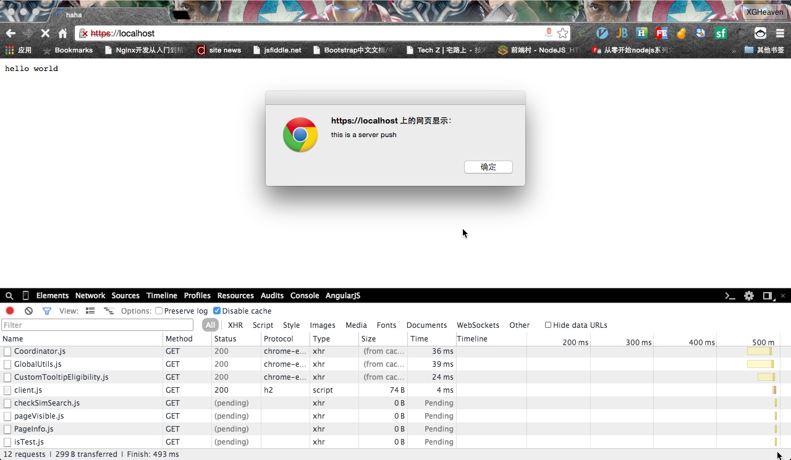
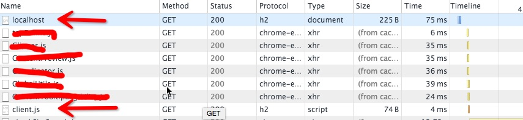

Http2 在 Nodejs 中的初尝试
目录
HTTP2 简介
请大家自行搜索百度 Or Google
前言
本文章内部的术语，我不进行大篇幅的解释，如果你不了解的话，请自行搜索，不要说自己懒~
如果本文章有问题的话，请及时进行评论，并和我联系
准备工作
通过翻墙打开Google.com测试浏览器是否支持http2
Google的官网通过我的观察，几乎已经全部使用了http2，你可以在开发者工具中的 Network 中查看 Protocol 使用的协议。

这里有一个问题，就是如果你的没有
Protoccol，这个怎么办？
你可以在上面单击右键，就会弹出来有哪一些列可以让你选择，然后你选择Protocol即可。
Chrome
通过 net-intervals 查看是否支持
对于Chrome浏览器，可以在地址栏上输入
chrome://net-internals
并在左上角的下拉菜单中寻找 HTTP/2 的字样，如果有的话，说明你的浏览器就支持http2，否则就话可能是另外一种情况

如果不支持，请尝试打开http2开关
在Chrome地址栏中输入
chrome://flags
当前页面搜索 http2 ，找到相应的内容，并开启。然后重启浏览器尝试
否则的话，我也不知道了
如果还是前面两种都不可以的话，那么就请自行百度吧。
firefox
这个由于我没有firefox的浏览器，就留给读者自行百度了。
其他浏览器
同样自行百度吧
建立Nodejs工作目录，并安装依赖
浏览器都支持之后，那么就是开始准备我们的工作目录了。创建一个目录，我这里就叫做 try-http2。并安装http2包。
使用openssl生成密钥和证书
这里不再重复，请尝试百度，并将证书和密钥拷贝到目录下面
准备工作结束
创建服务器(start-server 分支)
使用http2服务创建服务器和使用https是基本一样的1
2
3
4
5
6
7
8
9
10
11
12
13var http2 = require('http2');
var fs = require('fs');
var server = http2.createServer({
key: fs.readFileSync('privatekey.pem'),
cert: fs.readFileSync('certificate.pem')
}, function(req, res) {
res.end('hello world');
});
server.listen(443, function() {
console.log('listen on 443');
});
此时在terminal中启动服务器即可
记住，这里一定要用
sudo来启动，因为在Linux的系统中（Mac也是和Linux相同祖先），普通用户是无法监听到1024端口一下的端口，所以要用sudo来让程序监听443端口，因为https服务就是监听在443端口的
访问 https://localhost/
在浏览器中访问上面那个地址，然后在Network中查看Protocol是否为h2

看成功了，已经成功通过http2协议打开了这个网页。
你会发现在地址栏上https证书出现了错误，这是因为证书是你自己发布的，Chrome自然是不认识了
尝试服务器推（server-push 分支）
说到服务器推，大家一定第一个想到的是WebSocket，但是相比于WebSocket来说，服务器推的东西不是数据，而是网络请求。
其实他的正规说法是，服务器会推测你需要的东西，在解析HTML前将你需要的文件或者数据给你请求回来。这样，你请求了一次数据，返回了好几个资源
建立一个首页 index.html
1 | <!DOCTYPE html> |
在代码中加入服务器推的代码，并返回上面那个主页
1 | var http2 = require('http2'); |
启动服务器，并访问之

看成功执行了client.js中的代码。
下面我们来看看Network中的请求

你会发现虽然是请求了两次，但是client.js是服务器推送过来的请求，并不是浏览器去请求的。
总结
虽然服务器推跟我们的心里落差较大，但是这并不影响这个技术的实施。
有了服务器推，可以很好的加快网站的加载速度，完全可以不需要等待整张页面加载完成之后再加载相关的数据。像一些script，CSS之类的可以在渲染页面之前就加载完成。
但是这个服务器推仍然无法替代WebSocket的地位，因为两个东西本质和目的都是不同的。而且服务器推相比来说，我们能控制的能力更少。
但是服务器推也有缺点，就是会无故增加浏览网页的流量，对于移动端来说，这将是致命的！